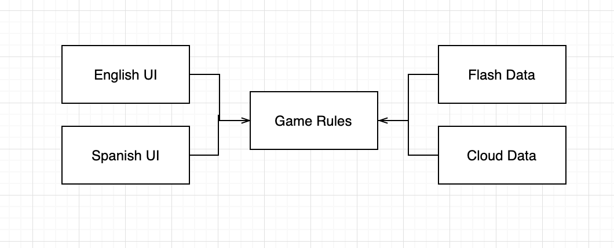
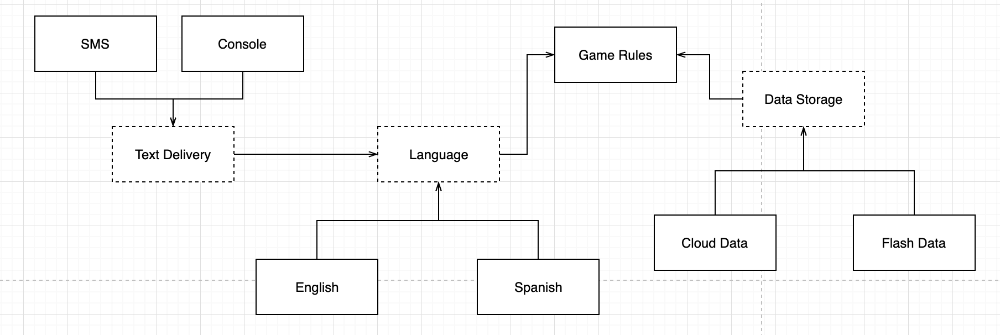
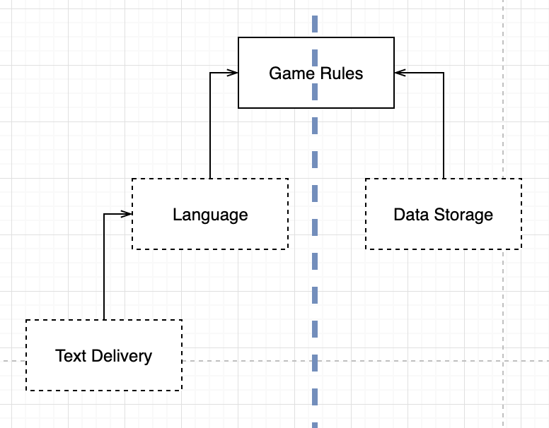
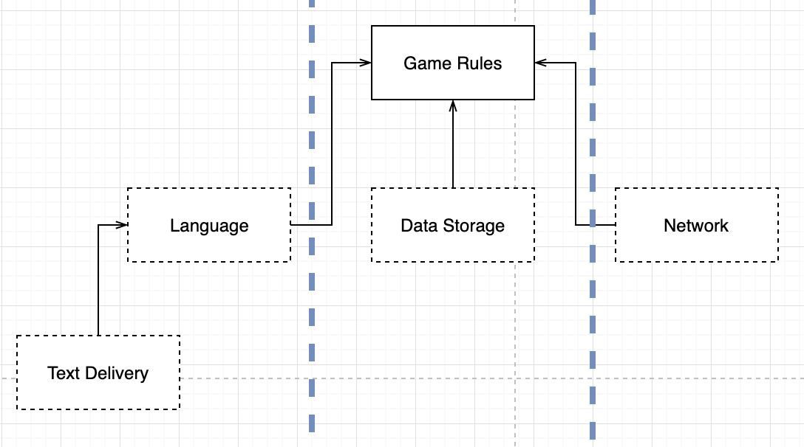
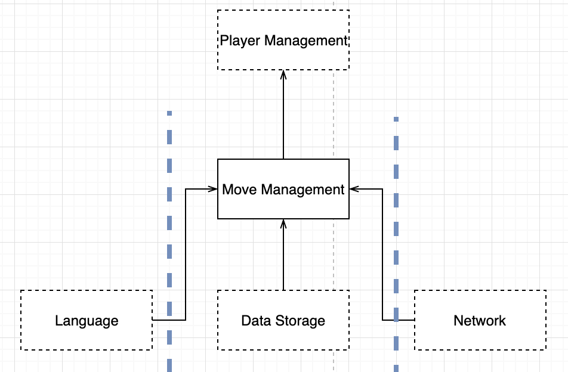
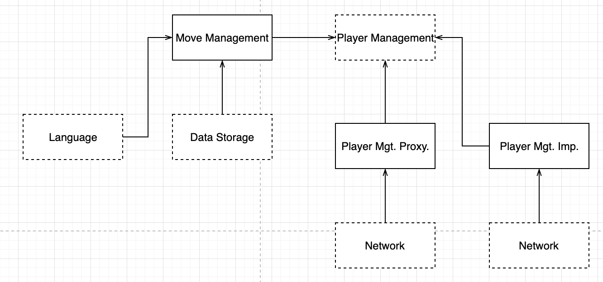

“CleanArchitecture 25장”
옴퍼스 사냥 게임
움퍼스 사냥 게임

- UI 컴포넌트가 어떤 언어를 사용하더라도 게임 규칙을 재사용 할 수 있음
- 게임 규칙이 데이터 저장소에 대해 알지 못함
- 의존성이 적절할 방향을 가리키게 만들어야 함
클린 아키텍처?

- 점선 : API 를 정의하는 추상 컴포넌트
- Language API는 English 와 Spanish 가 구현

- 오직 API 컴포넌트에 집중한 다이어그램
- GameRules가 최상위 컴포넌트
- 정보 흐름 :
– 사용자 통신에 관여 하는 흐름
– 사용자 입력 -> TextDelivery -> Language 언어 번역 -> GameRules 명령어 번역 -> Language 언어 번역 -> TextDelivery -> 사용자 전달
– 데이터 영속성에 관여하는 흐름
– GameRules -> 사용자 입력 처리 -> DataStorage
흐름 횡단하기

- 데이트의 흐름은 세 개로 분리되며 , 모두 GameRules가 제어함
시스템이 복잡해질수록 컴포넌트 구조는 더많은 흐름으로 분리될 것이다.
흐름 분리하기

- 저수준 규칙 : 식량 발견, 구덩이에 빠짐 등의 사건 발생 -> 고수준 정책에게 알림
- 고수준의 정책은 플레이어 상태를 관리, 플레이어 승리 여부 결정, 식량 발견 시 생명력 증가

- 대규모의 플레이어 계층이 동시에 플레이어할 수 있는 버전의 옴퍼스 사냥 게임
- MoveManagement 는 플레이어의 컴퓨터에서 직접 처리
- PlayerManagement는 서버에서 처리
- PlayerManagement에 접속된 모든 MoveManagement 컴포넌트에 마이크로 서비스 API 를 제공
- MoveManagement와 PlayerManagement 에 완벽한 형태의 아키텍처 경계가 존재
결론
아키텍처 경계는 어디에나 존재한다. 아키텍트는 아키텍처 경계가 언제 필요한지를 신중히 파악해야 하며, 이런 경계를 구현하는데 드는 비용을 고려해야 한다.
추상화가 필요하리라 미리 예측해서는 안된다. 오버 엔지니어링이 언더 엔지니어링보다 나쁠 때가 훨씬 많기 때문이다.
경계가 정말 필요하다는 판단이 들면 큰 비용과 위험을 감수해야 한다.
프로젝트 초반에는 경계가 모호하며 쉽게 결정할 수 없기때문에 시스템이 발전함에 따라 주의를 기울여 관찰해야 한다.
목표를 달성하려면 빈틈없이 지켜봐야 한다.